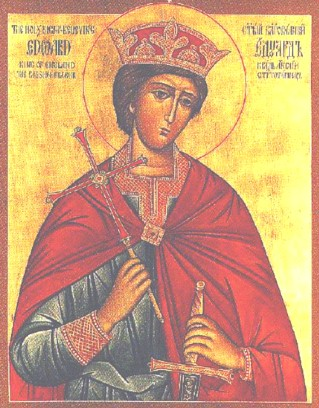
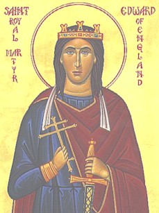

In 1976, two Orthodox Christians of the Orthodox Parish of St. Michael the Archangel, Guildford, Surrey, England (Russian Orthodox Church Abroad) made contact with Mr. J. Wilson-Claridge, an amateur archaeologist and the owner of the wonder-working relics of Martyr-King Edward of England, who was killed over a thousand years ago, on March 18/31, 979. Mr. Wilson- Claridge was looking for a worthy reliquary for the relics of the king-martyr, and was not satisfied by the offers to house them made by the Catholic and Anglican Churches.In response to the offer of the Orthodox Christians to give the English Orthodox king a worthy resting place, Mr Wilson-Claridge decided to give his relics to the Russian Orthodox Church Abroad (ROCA); and on September 3/16, 1984, they were formally accepted on behalf of the ROCA by Bishop Gregory (Grabbe) of Washington and Eastern America, and placed in a beautiful reliquary in the Orthodox Church of St. Edward, Brookwood, near Guildford, Surrey, England.
It may therefore be of interest to Russian readers to learn of the life of this great saint of the Anglo-Saxon Orthodox Church before the schism between the East and West, whose relics have now become the possession of the Russian Church.
The holy Martyr-King Edward was the son of King Edgar the Peaceable of England and his first wife, Queen Ethelfleda, who died not long after his birth in 963 or 964. Already before St. Edward's birth, his father had had a dream. He told this to his mother, the abbess St. Elgiva, who was possessed gifts of prophecy and wonder-working. She interpreted the dream as follows: "After your death the Church of God will be attacked. You will have two sons. The supporters of the second will kill the first, and while the second will rule on earth the first will rule in heaven."
Now King Edgar had been anointed twice on the model of King David: first in 960 or 961, when he became King of England, and again in 973, when his dominion expanded to the north and west and he became "Emperor of Britain", receiving the tribute of eight sub-kings of the Celts and Vikings.
But between these two anointings he had married again and fathered a second son, Ethelred. When King Edgar died in 975 (his relics were discovered to be incorrupt in 1052), Ethelred's partisans, especially his mother, argued that Ethelred should be made king in preference to his elder half-brother Edward, on the grounds that Edgar had not been anointed when he begat Edward in 959 or 960, and that his first wife, Edward's mother, had never been anointed, so that the throne should pass to the younger son, Ethelred, who had been born "in the purple" when both his parents were anointed sovereigns.
The conflict was settled when the archbishop of Canterbury, St. Dunstan, seized the initiative and anointed St. Edward. However, the defeated party of Ethelred did not give up their opposition to God's chosen one.
St. Edward, according to an early source, "was a young man of great devotion and excellent conduct. He was completely Orthodox, good and of holy life. Moreover, he loved above all things God and the Church. He was generous to the poor, a haven to the good, a champion of the Faith of Christ, a vessel full of every virtuous grace."
However, many troubles met the young king on his accession to the kingdom. A great famine was raging through the land, and, beginning in the West and spreading to the East, a violent attack was stirred up against the holy monasteries by a prominent nobleman named Elfhere. Many of the monasteries which King Edgar had established were destroyed, and the monks were forced to flee.
Thus according to a contemporary monastic writer: "The whole kingdom was thrown into confusion, the bishops were agitated, the noblemen stirred up, the monks shaken with fear, the people terrified. The married clergy were glad, for their time had come. Abbots, with their monks, were expelled, and married clergy, with their wives, were introduced [in their place]."
The root of the trouble was that in the previous reign the white clergy [married clergy, PSH] had been expelled from the monasteries in which they had been living unlawfully, had been replaced by real monks, and were now seeking to be re-established in their former place. Also, the nobles coveted the lands which King Edgar had given to the monasteries. Already in the previous reign there had been a council to discuss this question, and when it was suggested that the white clergy be restored to their place, a voice was heard from a cross on the wall: "Far be it from you! You have done well: to change again would be wrong."

In spite of this, the pressure continued and erupted into violence at the beginning of the reign of King Edward. However, King Edward and Archbishop Dunstan stood firm in a series of stormy councils attended by all the leading men of Church and State. Thus at one council, which took place at Kirtlington, Oxfordshire, after Pascha, 977, the tension was so great that the king's tutor, a bishop, died suddenly during the proceedings.Then, at another council in Calne, Wiltshire, when the white clergy were renewing their complaints, St. Dunstan said: "Since in my old age you exert yourselves to the stirring up of old quarrels, I confess that I refuse to give in, but commit the cause of His Church to Christ the Judge." As he spoke the house was suddenly shaken; the floor of the upper room in which they were assembled collapsed, and the enemies of the Church were thrown to the ground and crushed by the falling timber. Only the beam on which the archbishop was sitting on did not move.
In all this turmoil King Edward stood firm together with the archbishop in defense of the Church and the monasteries. For this reason some of the nobles decided to remove him and replace him with his weaker younger brother. They seized their opportunity on March 18, 979.
On that day the king was out hunting with dogs and horsemen near Wareham in Dorset. Turning away from this pursuit, the king decided to visit his young brother Ethelred, who was being brought up in the house of his mother at Corfe Castle, near Wareham. He took a small retinue with him, but suddenly, as if playing a joke on him, his retinue broke up and went off in all directions, leaving him to continue on his way alone.
When Ethelred's mother, Queen Etheldritha, heard from her servants that the young king was approaching, she hid the evil design in her heart and went out to meet him in an open and friendly manner, inviting him into her house. But he declined, saying that he only wished to see his brother and talk to him. The queen then suggested that while he was waiting he should have a drink. The king accepted. At that moment one of the queen's party went up to the king and gave him a kiss like Judas. For then, just as the king was lifting the cup to his lips, the man who had kissed him leapt at him from the front and plunged a knife in his body. The king slipped from the saddle of his horse and was dragged with one foot in the stirrup until he fell lifeless into a stream at the base of the hill on which Corfe Castle stands.
The queen then ordered that the holy body be seized and hidden in a hut nearby. In obedience to her command, the servants took the body by the feet and threw it ignominiously into the hut, concealing it with some mean coverings.
Now there lived in that hut a woman blind from birth whom the queen used to support out of charity. While she spent the night there alone with the holy body, suddenly, in the middle of the night, a wonderful light appeared and filled the whole hut. Struck with awe, the poor woman cried out: "Lord, have mercy!" At this, she suddenly received her sight, which she had so long desired. And then, removing the covering, she discovered the dead body of the holy king. The present church of St. Edward at Corfe stands on the site of this miracle.
The stream into which the holy king's body first fell was found to have healing properties. Many pilgrims who washed their eyes in the water recovered or improved their sight. These include two reported cases in modern times.
At dawn the next day, when the queen learned of the miracle, she was troubled and decided to conceal the body in a different way. She ordered her servants to take it up and bury it in a marshy place. At the same time she commanded that no one should grieve over the king's death, or even speak about it. Then she retired to a manor in her possession called Bere, about ten miles from Corfe.
Meanwhile, such grief took hold of Ethelred over his brother's death that he could not stop weeping. This angered his mother, who took some candles and beat him with them viciously, hoping thereby to stem the flow of his tears. It is said that thereafter Ethelred so hated candles that he would never allow them to be lit in his presence.
When St. Dunstan, archbishop of Canterbury, heard the news he was greatly saddened by the death of his beloved spiritual son, and at the coronation of his half-brother, Ethelred, at Kingston he prophesied great sorrow for the English people in the coming reign.
The prophecy was exactly fulfilled after Dunstan's death in 988, when the pagan Danes invaded England and eventually, in 1016, after over twenty years of bloody war, conquered the country.
The contemporary Anglo-Saxon Chronicle expressed the universal horror felt by the English Orthodox people at this time:
"No worse deed for the English was ever done than this, since first they came to the land of Britain. Men murdered him, but God exalted him; in life he was an earthly king, but after death he is now a heavenly saint. His earthly kinsmen would not avenge him, yet his Heavenly Father has amply avenged him. Those earthly slayers would have destroyed his memory upon earth; but the Heavenly Avenger has spread his fame abroad, in the heavens and upon the earth. Those who before would not bow in reverence to his living body, now humbly bend the knee to his dead bones. Now can we perceive that the wisdom of men, their deliberations and their plots, are as nothing against God's purpose."
Almost a year passed, and it pleased Almighty God to make known the heavenly glory of the martyr-king. A pillar of fire was seen over the place where his body was hidden, lighting up the whole area. This was seen by some devout inhabitants of Wareham, who met together and raised the body from the place where it lay. Immediately a sweet, clear spring of healing water sprang up in that place. Then, accompanied by a huge crowd of mourners, the body was taken to the church of the Most Holy Mother of God in Wareham and buried at the east end of the church. This first translation of the holy relics took place on February 13, 980.
Meanwhile, the queen's deceit and treachery were made known throughout the country, the fame of the innocent martyr-king increased, and many signs and miracles testified to his holiness. The nobleman Elfhere, deeply repenting of his destruction of monasteries and opposition to the king, decided to have the body translated to a worthier resting place. Bishops and abbots were invited, together with Abbess Wulfrida of Wilton and the nuns of Wilton monastery, who included St. Edith, the king-martyr's half-sister. A great number of laymen and women of Dorset also converged on Wareham.
Then the holy body was disinterred in the presence of the whole people and was found to be completely incorrupt. Seeing this, St. Dunstan and the other bishops led the people in hymns of praise to God, while St. Edith ran up to her brother's body and embraced it with tears of joy and sorrow combined.
Then the body was lifted onto a bier and with a great procession of clergy and laity was taken to Shaftesbury, to the women's monastery founded in the ninth century by St. Edward's ancestor, King Alfred the Great, in honor of the Most Holy Mother of God. The procession began on February 13, 981 and arrived at Shaftesbury seven days later, on February 20. There the holy body was received with honor by the nuns and was buried with great ceremony on the north side of the altar.
On the way from Wareham to Shaftesbury, two poor men who were so bent over and paralyzed that they could hardly crawl on their hands and knees were brought close to the bier. Those carrying it then lowered the sacred body down to their level, and immediately in the sight of all they were restored to full health. A great shout rose to the heavens, and all together glorified the holy martyr.
On hearing of the miracles worked through the saint, Queen Etheldritha was overcome by remorse and decided to go to him to ask forgiveness. But as she was riding to Shaftesbury with her servants, her horse suddenly stopped and refused to go further, nor would he be moved by blows of the whip and threats.
Then the queen realized that she was held back by the force of her sins. Jumping off the horse, she prepared to continue her journey on foot. But again she was hurled back and could make no progress. Later, weeping bitterly over her sins, the queen retired to a convent at Wherwell, where "for many years she clothed her pampered body in hair-cloth, sleeping at night on the ground without a pillow, and mortifying her flesh with every kind of penance".
During the twenty years after the translation of the relics of St. Edward to Shaftesbury, many miracles were worked through the intercession of the holy martyr-king.
Thus there was a woman living in a remote part of England, who had an infirmity of her legs and daily poured forth prayers for her health. One night St. Edward appeared to her in a dream and said: "When you rise at dawn, go without delay to the place where I am buried, for there you will receive new shoes that are necessary for your infirmity."
Waking early, the woman reported the dream to her neighbor; but she, disbelieving the vision, declared that it was imagination. And so the woman disobeyed the command of the saint. But he, appearing to her a second time, said: "Why do you spurn my command and so greatly neglect your health? Go then to my tomb and there you will be delivered." She recovered her strength and said: "Who are you, lord? Where shall I find your tomb?" He replied: "I am King Edward, recently killed by an unjust death and buried at Shaftesbury, in the church of Mary, the blessed Mother of God." The woman woke early, and thinking over what she had seen, took was needed for her journey and made her way to the monastery. There she prayed for some time with humble heart to God and St. Edward, and was restored to health.
Great miracles continued to be worked at the tomb of the royal martyr, and in 1001 his brother Ethelred, who had succeeded him on the throne, granted the town of Bradford-on-Avon "to Christ and His saint, my brother Edward, whom, covered in his own blood, the Lord Himself has deigned to magnify by many signs of power."
At about the same time the tomb in which the saint lay began to rise from the ground, indicating that he wished his remains to be raised from the earth.
In confirmation of this he appeared in a vision to a monk and said: "Go to the convent called by the famous name of Shaftesbury and take commands to the nun Ethelfreda who is in charge of the other servants of God there. You will say to her that I do not wish to remain any longer in the place where I now lie, and command her on my behalf to report this to my brother without delay."
Rising early, and perceiving that the vision he had seen was from God, the monk quickly made his way to the abbess as he had been commanded and told her in order all that had been revealed to him. Then the abbess, giving thanks to God, immediately told the whole story to King Ethelred, at the same time making known to him the elevation of the tomb. The king was filled with joy and would have been present at the elevation if he had been able. But, being prevented by the invasions of the Danes, he sent messengers to the holy bishops Wulsin of Sherborne and Elfsin of Dorchester-on-Thames, as well as to other men of respected life, instructing them to raise his brother's tomb from the ground and replace it in a fitting place.
Following the king's command, those men joyfully assembled at the monastery with a vast crowd of laymen and women. The tomb was opened with the utmost reverence, and such a wonderful fragrance issued from it that all present thought that they were standing amidst the delights of Paradise. Then the holy bishops drew near, bore away the sacred relics from the tomb, and, placing them in a casket carefully prepared for this, carried it in procession to the holy place of the Saints together with other holy relics. This elevation of the relics of St. Edward took place on June 20, 1001.
St. Edward was officially glorified by an act of the All-English Council of 1008, presided over by St. Alphege, archbishop of Canterbury (who was martyred by the Danes in 1012).
King Ethelred ordered that the saint's three feast days (March 18, February 13 and June 20) should be celebrated throughout England. The church in which St. Edward's relics rested was rededicated to the Mother of God and St. Edward, and that part of the town was renamed "Edwardstowe" in honor of the saint. The town kept this name throughout the Middle Ages: only after the Protestant Reformation was the original name of Shaftesbury restored.
Many miracles continued to be worked at the tomb of St. Edward. Thus during the reign of his nephew, King Edward the Confessor (1042- 1066), a man named John living in north-west France, whose whole body had been so bent by severe pain that his heels were touching his loins and he was unable to stand upright, was told in a vision at night to go to England to the monastery at Shaftesbury, where St. Edward lay, as there he would recover his health. He told this vision to his neighbors and relatives, and with their help and advice he crossed the English Channel and after many detours at last reached the monastery. Having prayed there for some time to God and St. Edward he recovered his health, and remained as a servant at the monastery for the rest of his life.
Not long after, a leper came to the tomb of the saint, and after invoking God's help by prayers and vigils, he received complete cleansing from his infirmity.
Another man who had been bound in heavy chains for his sins was suddenly freed from them as he was praying earnestly at the tomb.
Again, Bishop Herman of Salisbury was staying at the monastery, and a poor blind man whom he supported was with him. While the bishop was delayed, the blind man decided to go and pray at the tomb, led by a boy who guided his steps. He continued praying until evening, when the wardens who were looking after the church asked him to leave. He refused, and said that he would wait on the mercy of God and St. Edward.
Impressed by his faith, they let him stay, while insisting that the boy return to his lodgings. After staying at his place for some time, the blind man was overwhelmed first by extreme cold, then by extreme heat. And then he recovered his sight. The next morning, some would not believe the miracle; but when witnesses came forward who affirmed that he had been blind for a long time, praise was given to Christ Who works great wonders through His Saints.
One of the miracles associated with St. Edward was the continual quivering of his incorrupt lung. It is known that this lung still quivered in the twelfth century. However, in 1904 an eleventh-century glass vessel containing "a shrunken nut-like object" was found beneath a small marble slab in front of the High Altar. The vase may still be seen in Winchester Cathedral, but the relic, which was probably St. Edward's lung, was thrown away.
In 1931 Mr. Wilson-Claridge discovered some bones in a lead casket in the north transept of Shaftesbury Abbey. Although the archaeological evidence suggested that these were indeed the relics of the saint, he decided to seek the advice of a professional osteologist, Dr. T.E.A. Stowell. He examined the bones and in a long report published in The Criminologist came to the conclusion that they were the bones of a young man of about 20 (the saint was about 17 when he was martyred), that he was a Saxon and not a Celt, that certain bones were missing (we know that parts of the relics were removed to Leominster and Abingdon in 1008), and that certain bones were injured. These injuries corresponded to a person being dragged backwards over the pommel of a saddle and having their leg twisted in a stirrup. From all this evidence Dr. Stowell concluded that these were indeed the bones of the martyred King Edward.
However, at the time when the holy relics were about to be transferred to the Russian Church Outside Russia, opposition suddenly arose. Another (two-page) report on the relics was commissioned which challenged the findings of Dr. Stowell, arguing that the bones were of an older man. Then the brother of Mr. Wilson-Claridge sought a high-court injunction preventing the Russian Church from receiving the relics. Even some members of the ROCA supported the brother of Mr. Wilson-Claridge, claiming that he had a half share right in the relics. The citizens of Shaftesbury also argued that the relics should stay in Shaftesbury.
One ROCA hierarch, Archbishop Mark of Germany, questioned whether St. Edward was a true saint because, as he claimed, the heresy of the Filioque was entrenched in England at the time. However, a Synodical decision declared in favor of St. Edward, and the doubting hierarch "agreed with the former decision after having been acquainted with the historical information compiled by His Grace, Bishop Gregory, who cited a list of names of Western saints of the same period who have long been included in our list of saints (among whom are St. Ludmilla, St. Wenceslaus of Czechia, and others)."
The present writer has argued that it is far from clear whether the Filioque was in general use in England at the time of St. Edward (late tenth century), and that in any case no less rigorous a theologian than St. Maximus the Confessor had declared, when the Roman Church first adopted the Filioque, that she did not in fact understand it in a heretical sense at that time. Thus the possibility exists of a heresy being accepted at an early stage out of ignorance, while those who hold it remain Orthodox.
In England, meanwhile, a long legal battle began, during which the holy relics were kept in a bank vault. At one point the Attorney General decided that the relics belonged to the Queen of England. Then he changed his mind, but insisted that the relics should be kept especially secure - probably because they were the relics of a king. Finally, on March 18/31, 1995, the principal feast day of St. Edward, the case against the ROCA was dismissed and the relics were returned to the Church.
Miracles continue to be worked through St. Edward to the present day.
Thus the English Orthodox Christian "S.P." writes: "I was very happy to be pregnant again but saddened to learn that I had caught the rare disease of toxoplasmosis. The doctors advised me to abort at once: 'Come through to this room,' they said, 'and it will be over in a few minutes.' As an Orthodox Christian, I refused to have any truck with this. They promised me, a malleable (so they thought) young woman of 23, a child with no legs and no arms. I put my faith in God.
Later, six months pregnant, I returned to the clinic for a scan. This time the doctors came out with a slightly more reassuring story: my child, for they could see him now, would have arms and legs, but he would be born blind.
"It was at this very time that I first came to read the little brochure, The Recorded Miracles of St. Edward the Martyr. I had always been attracted by St. Edward's icon and when I read that his first miracle had been to heal a blind woman, I was overwhelmed with the thought that my son should be called Edward. We decided to baptize him so, despite our Archbishop who refused to recognize the Saint and tried to force my husband into changing the name.
And when Edward was born, he was not blind, but a good, happy baby, perfectly normal and so strong and healthy! Imagine our joy! The doctors were very surprised, and perhaps a little ashamed of themselves, but they did show me and my husband the umbilical cord and placenta. It was astonishing, for we could clearly see how the top half of the cord had been discolored an ugly black by an infection. The discoloration had stopped exactly half-way down the cord. I am so thankful to God and St. Edward. The Lord is truly wonderful in His Saints."
S. McDonnell, an Orthodox Christian from Australia, writes: "On Great Friday this year I met up with Edward, a Bulgarian friend, in Jerusalem. He related the following to me while we were at the Holy Sepulchre."
"As a child, he had not been baptized. Recently he had asked to receive the sacrament of holy baptism in Jerusalem. The priest, Fr. Iakovos, agreed but informed Edward that he would have to change his name because it 'was not Orthodox'. Much saddened, Edward agreed, but went home with a grief-stricken heart because he was fond of his name. That night while he slept, a young man wearing a cloak of purple and a square shaped crown of gold appeared and said: 'I am Edward, King of the English. You bear my name. Be baptized.' That was all. (I later found out from Fr. Niphon of St. Edward's Brotherhood that the Saxon crown was a square one.)"
"I was surprised and showed my friend Edward a paper icon of St. Edward that I carry with me. I asked if this was the one. Shocked, he stammered out yes, noticing particularly that St. Edward's crown was square and his cloak purple for a King. You can imagine how shaken I was by this, my mouth was open, I just couldn't believe it."
By Vladimir Moss. Posted with permission
SOURCES
The Anglo-Saxon Chronicle. Anonymous, "Vita Oswaldi", in J. Raine, Historians of the Church of York, Rolls Series, 1874, vol. I. "Passio et Miracula Sancti Edwardis Regis et Martyris" (11th century), in Christine Fell, Edward King and Martyr, University of Leeds, 1971. William of Malmesbury, Gesta Regum Anglorum. J.M. Kemble, Codex Diplomaticus Aevi Saxoni, 1845-8, no. 706. D.J.V. Fisher, "The Anti-Monastic Reaction in the Reign of Edward the Martyr", Cambridge Historical Journal, 1952, X, pp. 254-270. Theodoric Paulus, quoted in Orthodoxy America, May-June, 1981. Living Orthodoxy, volume IV, no. 4, July-August, 1982, p. 16. V. Moss, "Western Saints and the Filioque", Living Orthodoxy, volume IV, no. 1, January-February, 1982, p. 29. J. Wilson-Claridge, The Recorded Miracles of St. Edward the Martyr, Brookwood: King Edward Orthodox Trust, 1984. V. Moss, The Saints of Anglo-Saxon England, Seattle: St. Nectarios Press, volume 2, 1993. Archimandrite Alexis (Pobjoy), "The St. Edward Brotherhood", Necropolis News, Brookwood, Surrey, vol. 2, no. 1, April, 1996. "S.P.", "A Miracle of St. Edward the Martyr", Orthodox England, vol. 1, no. 4, June, 1998, p. 14. "A Holy Name: A Miracle of St. Edward", Orthodox England, vol. 2, no. 3, March, 1999, p. 11.
We confidently recommend our web service provider, Orthodox Internet Services: excellent personal customer service, a fast and reliable server, excellent spam filtering, and an easy to use comprehensive control panel.